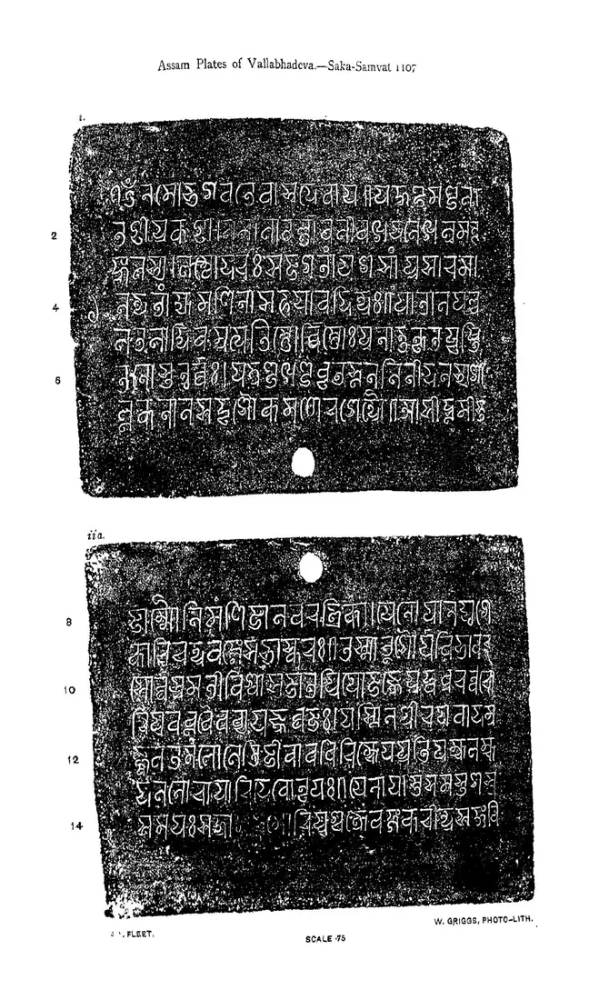
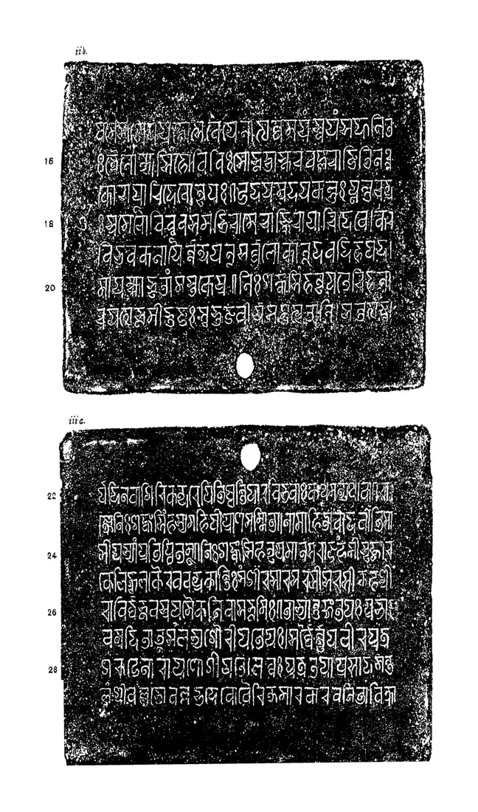
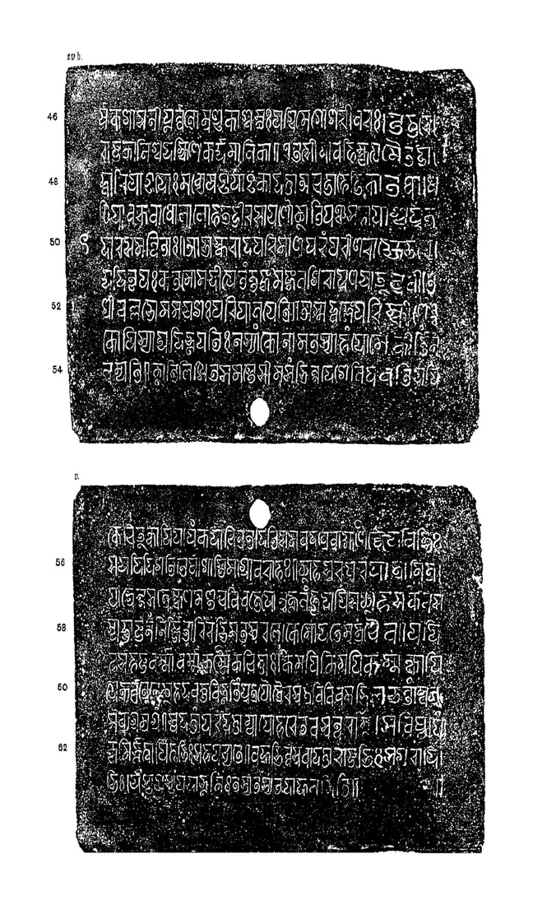

Assam plates of Vallabhadēva ; Śaka-Samvat 1107
No. 19.— ASSAM PLATES OF VALLABHADEVA ;
SAKA-SANVAT 1107.
By F. KIELHORN, PH.D., LL.D., C.I.E. ; GÖTTINGEN.
These plates belong now to the Asiatic Society of Bengal, to which they were presented1 by Mr. W. Winckler, Assistant Executive Engineer of Tezpur, the chief town of the Darrang district of Assam, Constable's Hand-Atlas of India, Plate 30 Bb. The text of the inscription has already been published by Dr. Hultzsch, in the Zeitschrift D. Morg. Gee. Vol. XL. p. 42 ff. I re-edit the inscription2 from excellent impressions which were taken by Dr. Fleet in February 1886, and given to me by him some years ago.
These are five copper-plates, the first and last of which are inscribed on one side only, and each of which measures from
1 I take this information from Dr. Hultzsch's account of the inscription.
2 When I suggested to Dr. Hultzsch the great desirability of having the plates photolithographed, he most readily gave his permission to do so, and himself requested me to re-edit this record. The photolithograph has been prepared under Dr. Fleet's supervision.
3 I do not know whether there is a numerical figure on the second side of the fifth plate; there is none on the first side of it.
4 See above, Vol. IV. p. 255.
5 The figures for '1' and '3' are the same as those used in the Gayâ Buddhist inscription, Ind. Ant. Vol. X. p. 342, Plate; that for '2' occurs, in the same form, in the last line of the Tarpandight plate of Lakehmagasêna, Jour. Beng. As. Soc. Vol. XLIV. P. I. p. 12 (where it has been mistaken for '3'); and that for '4' in line 53 of the Kamauli plates of Vaidyadêna, to be mentioned below. The same plates, in line 58, and the Gôvindpur inscription of Gangâdhara (to be mentioned below), in line 35, have a different form of '1.'
6 I allude to the alphabet used, e.g., in the Kamauli plates of Vaidyadêna of Prârjyôtisha, published with a photolithograph in Ep. Ind. Vol. II. p. 347 ff. One special feature of that alphabet, which is essentially the same as that of the Gôvindpur inscription of the poet Gangâdhara, published ibid. p. 230 ff., is, that many letters, at the top, have a kind of triaugle. And another peculiarity is, that the letter r, before another consonant, is denoted by a short line which is sideways attached, on the proper right, to the middle of the akshara of which r forms part. In the Gôvindpur inscription r is so written in all conjoincts; in the Kamauli plates, this
is published herewith, I need not attempt a minute description of all individual characters; but one or two more general points may be drawn attention to. In deciphering the text, as was stated already by Dr. Hultzsch, a difficulty is occasionally caused by the great similarity of two or even three different letters. Thus, it is not always easy to distinguish between p and y, between n and l (compare nalinî-dalasya, l. 6). between ch and r (compare kéri chandra-, l. 9), ch and v (compare rachôbhir-, l. 32), v and dh (compare vadhû-vaidhavya-, l. 11), or between the subscript u and r (compare induh, l. 4, and °ragéndrau, l. 7); and where letters like these happen to occur in proper names such as we find in lines 36 and 43-49, it is impossible to vouch for the absolute correctness of the transcribed text. Another matter which may be mentioned is, that for some letters we have two or more different forms. This is particularly the case with the subscript u, but also, e.g., with l and dh; (for the forms of u compare Vásudéváya, l. 1, dyumaninî, l. 4, °pinadyugê, l. 8, induh, l. 4, and punitu, l. 5; for those of l, khahu, l. 2, Lamvédarah, l. 3, and kéli-kula, l. 25; and for those of dh, dhrita, l. 6, and khadg-áyudha, l. 34). I may also state that the letter r, where it immediately precedes another consonant, is written by the ordinary superscript sign, except in the conjuncts rgg, rnp, and rth, the forms1 of which may be seen from svargga, l. 38, Udayakarnpah, l. 17, and °tyartham, l. 15. In the word varrpávali in line 2, the superscript r has been wrongly engraved on the top of an akshara which would be rnpâ, already without it.2 The sign of avagraha is not used in the inscription; nor are there any special signs for final consonants. The sign of anusvára is always written above the line and is nowhere employed in the interior of a simple word, instead of the nasal of one of the five classes; and the sign of visarga, differing from the sign which is used in the Deopara inscriptions, is much like an English 8, except that often, at the bottom, it has a short tail.3— The language
sign for r is generally used when the sign of the consonant with which r is combined has a triangular top, as is the case in conjuncts like rkk, rchekh, rjj, rtl, rdd, rddh, rll, rov, etc. Neither of these two peculiarities is found in the Deopara inscription or in the inscription here edited. It is true that in these inscriptions the signs of certain aksharas, such as ku, tu, tra, tri, trai, etc., more or less frequently, have an angular top, but we nowhere see the triangle; and r never is denoted in them by the side-line, described above. [In lines 1-46 of Vaidyadéva's inscription, according to Mr. Venis's edition, the letter r, as the first part of a conjunct, is omitted by the engraver 36 times,—twice (according to the impressions only once) before y, once before m, and no less than 33 times where the r would ordinarily be denoted by the side-line. According to my experience, this side-line generally is very thin and shallow in the original inscriptions, so that often it does not shew at all clearly in the impressions; and, in the case of Vaidyadéva's plates an examination of four impressions, of which I owe one to Mr. Venis himself and three to Dr. Führer, enables me to state with confidence that the engraver is not guilty of so many omissions as would seem to occur at first sight.]— As regards the letter jh, it will suffice to compare the sign for jh (which is almost exactly like the jh of the modern Bengali) in jháta in line 41 of the present inscription, and that for jjh in the aksh ura jjhi (not jht) of ujjhitâ in line 21 of the Deopara inscription, with the quite different signs for the same letters in the words jhatiti and ujjhita in lines 23 and 7 of Vaidyadéva's plates. The initial i, in the Gövindpur inscription, is denoted by two circles, placed side by side, with a kind of circumflex above them; and in Vaidyadéva's plates we have two signs for i, one with two circles below (as in iti, l. 3), and the other with the two circles at the top (as in iva, l. 45, and imâh, l. 66), both quite different from the i of the inscription here edited. [I may mention that Vaidyadéva's plates furnish two corresponding forms of the rare initial t. One of them occurs at the end of line 40, in Pâi, where the photograph omits the vertical line between the two circles, by which t is distinguished from i, and which is perfectly clear in the impressions; and the other form we have in the word tâdna, in line 54, the t of which has been erroneously taken to be ai.]— If I had to suggest special names for the two varieties of the alphabat spoken of above, I, with my present knowledge, should call that of Vaidyadéva's plates the Pala, and the other the Sêna variety.
1 The same signs, which of course owe their origin to the fact that the sign for r was written on, not above, the top-line, are used in the Deopara inscription and elsewhere.
2 The same mistake was made by the engraver of the Gaubatî plates of Indrapâlavarmân (Jour. Beng. At. Soc. Vol. LXVI. P. I. p. 123 ff.) in the word arnnava, Plate iia, l. 5; compare the proper sign for rnpa, without the superscript sign for r, in varnpa, ibid. Plate iib, l. 2. The sign transcribed by rnya (corrected to rnnya), ibid. Plate iia, l. 3, is really rnnya in the original. Whether in the Gaubatî plates, in the conjunct rgg, r is written on or above the line, it is difficult to decide.
3 The two circles were joined, so as to enable the writer to form the sign of visarga with one stroke of the pen. To a similar process we owe the form of the initial i, here used.
Plate 1 is bound after this page.
Plate 2 is bound after this page.
of the inscription is Sanskrit, and, with the exception of the introductory ônh ôn: namô bhagavatê Vâsudêvâya, the whole is in verse. Of unusual words, or words used in an unusual sense, the text offers nârapatya, l. 20, 'rule, reign,' kâsa(sa)ra, l. 33, 'a buffaio,' chhurîkhîra l. 34, 'one who is skilled in the use of the dagger,' jhâta in the technical expression sa-jhâta-viṭapa, l. 41, 'with the woods and thickets,' and âkarshaka, l. 45, 'the extent (? of a piece of land).' In respect of orthography the following points may be noted: The letter b is written by the sign for v; the palatal and dental sibilants are confounded in saṁśira (for saṁsdra), l. 25, kâsara, l. 33, śimâ, l. 42, sringâra, l. 24, subhê and sastê, l. 41; the guttural nasal is employed instead of the sign of anusvâra in the word vaṁsa, ll. 9, 16, and 52; before y, l is doubled in šallyasya, l. 31; and eight times the rules of saṁdhi have not been observed in regard to the final consonant of a word before a following consonant. Besides it may be noted that in line 21 samutsritâni is used instead of samuchchhritâni.
The inscription is one of a prince Vallabhadêva of whom, in verses 3-10, the following genealogy is given: In the race of the Moon there was a certain Bhâskara; his son was the king or chief Râyâridêva-Trailôkyasimha (whose wife1 was Vasumatî?); his son, again, was Udayakarṇa-Niḥṣankasimha, whose wife was Ahiavadêvi2; and their son was Vallabhadêva-Śrivallabha. Nothing of historical importance is recorded of any of these chiefs.
According to verses 13-22, Vallabhadêva, at the time of the sun's progress to the north in the Śaka year 1107 (given in numerical words), at the command of his father and for the spiritual welfare of his mother, founded an alms-house or place for the distribution of food (bhakta-śâllâ, anna-sattra), near a temple of the god Mahâdêva (Śiva) to the east of Kirtipur in the Hâpyachâ3 district (maṇdala); endowed it with (the revenues of) certain villages and hamlets the names and boundaries of which are given, and (so far as I understand the text) assigned the services of five men, whose names also are recorded, and of their families.
The localities mentioned in the inscription I am unable to identify. The date does not admit of verification; it would correspond to the 25th December of either A.D. 1184 or 1185, according as the Śaka year 1107 is taken as a current or an expired year.
TEXT.4
First Plate.
| 1 | Ôm5 | ôm | namô | bhagavatê | Vâsudêvâya | || | 6Yad-gaṇḍa-maṇḍala |
| 2 | taṭī-prakat-âli-mâlâ | varṇṇ-âval-îva | kha. dalê | khalu ma | |||
| 3 | ñgalasya | | Lamvô(mbô)daraḥ | sa | jagatâm | yaṣasârn | prasâram=â | |
| 4 | nandatâm | dyumaṇiuâ | saha | yâvad-induḥ | || [1*] | Pâtâla-palva | |
| 5 | la-talâd=divam=utpatishṇôr=Vvishṇôḥ | punâtu | krita-ghṛishṭī | ||||
| 6 | tanôs=tanur=vvaḥ | | yat-tuṇḍakhaṇḍa-dhṛita-bhû-nalinîdalasya | śâ | ||||
| 7 | lûka-nâla-sadṛiṣau | kamaṭḥ-ôragândrau | || [2*] | 7Âstâ=bhûmibhu |
Second Plate; First Side.
| 8 | jâm=mañli-maṇi-jâla-varatrikâ | | yên=ôpânad-yugê= | |||
| 9 | kâri | Chandra-vaṁsê8 | sa | Bhâskaraḥ || [3*] | 9Tasmât10 śaurya-vibhâva |
1 See my note on the translation of verse 4
2 Or, perhaps, Âhiavadêvt.
3 Compare the name Hapyôma, in Hapyôma-vishaya in Plate iiß, line 6, of the Gauhuṭi plates of Indrapâlavarman, mentioned above.
4 From Dr. Fleet's impressions.
5 Expressed by a symbol.
6 Metre of verses 1 and 2: Vasantafilakâ.
7 Metre: Śîôka (Anushṭubh).
8 Read -vaṁśi.
9 Metre of verses 4 and 5: Śârdûluvikrîḍita.
10 Read tasmâch.
| 10 | sôr=vvasumatí-višvása-játa-priyô | jajūê | yuddha-dhurandharô |
| 11 | ripu-vadhú-vaidhavya-yajña-dhvajah | | yasmina1 | Śrír=apavādam=u- |
| 12 | jjvalatamam | lôl=êti | jīv-āvadhi chikshêpa pratipaksha-laksha- |
| 13 | dalanô | Râyâridêvô | nṛipaḥ || [4*] Yên=ápásta-samasta-śastra- |
| 14 | samayaḥ | saṅgrāma-bhúm[au] | ripuś=chakrê Vaṅga-karīndra-saṅga-vi. |
Second Plate; Second Side.
| 15 | shamê | sâtôpa-yuddhôtsavê | [1*] | yên=âtyartham=ayam svayam saphalita- |
| 16 | h2 | Trailôkyasimhô | vidhih sô=bhúd=Bhâskara-vanśa-râjatila-3 | |
| 17 | kô | Râyâridêvô | nṛipaḥ || [5*] | 4Udayam=Udayakarṇṇaḥ púrnṇa-chandra- |
| 18 | ḥ | Sumérau | vivu(bu)dha-samabhirâmê | râjūi Râyâridêvô | kara- |
| 19 | vibhava-kalâpair=nnandayan | sarvva-lôkán | dadhad=iha pada- | |
| 20 | m=ápa | kshmâbbhritâm | mastakêshu || [6*] | 5Niḥśaṅkasimha-nṛipatêr=iha nâ- |
| 21 | rapatyê | bhúmîbhujaḥ | sva-bhuja-vîrya-samutṣṛitâni6 | | santatyaju- |
Third Plate; First Side.
| 22 | r=yadi na vâ | giri-kandarê=pi | tishṭhanti dâra-vibhavâḥ | katham=anyathâ vâ || [7*] Râ- |
| 23 | jñô7 | Niḥśaṅkasimhasya | mâhishî prâpa-sammitâ | | nâm=Âhiavadêv=îti s=â- |
| 24 | síd=yasyâm | prati[sh]thitam || [8*] | 8Niḥśaṅkasi[m*]jha-nṛipa9-mânasa-râjaharinsi sṛi(śṛi)ṅgâra- | |
| 25 | kôli-kula-kairava-chandra-kântih | [1*] | samśi(sâ)rasâra-sarasî-sarasîruha-śrî- | |
| 26 | r=âvirvva(rbba)bhúva | susham-aiṣa-nivâsabhúmiḥ || [9*] | 10Tâbhyân=tuṅga-tapaḥ-prabhâ- | |
| 27 | va-muditât | samlabhya | Gaurî-patê11 yaḥ | | sarvvair=nṛipa-vîra-putra- |
| 28 | Garudê12 | Nârâyaṇô | gíyatê | | lavdhaḥ(bdhaḥ) putratayâ prasâdam=atu- |
| 29 | lam | Śrî-vallabhô | Vallabhadêvô | vairi-kumâra-vâravanitâ-vikrâ- |
Third Plate; Second Side.
| 30 | nti-lílâ-patiḥ || [10*] | Yasy=âkhêta-kathôra-pâtana-patôr=âtôpa- | |
| 31 | m=âlôkitum13 | | â | múlânâhish-âvalî praviśataḥ śallyasya dê- |
| 32 | va-vrajâḥ | | âyâtâ jaya | Vallabh=êty=anuyayuh sarvvê vachôbhir=mmu- |
| 33 | dí tatr=aikô | vimukhaḥ | sva-kâśa(sa)ra-paritrâpâya yâtô Yamaḥ |(||) [11*] |
| 34 | 14Khaṅg-âyudha-jñaḥ16 | chohharikâra-mukhyô | dhânushka-vidyâ-prasha(tha)maikarê- |
| 35 | khaḥ16 | | Kâmyô(mkô)ja-vâji-vraja-vâhanêndra-yant=âbhavad=Vallabhadêva | â- |
| 36 | va || [12*] | 17Hâpyachâ-maṇḍala-madhya-sthô18 | Mahâdêvasya sannidhau | bhakta-śi(śâ)lâ kshu- |
| 37 | dhârttânâ[m*] | Kirtti-púrvva-puraḥ | puraḥ |(||) [13*] Dadê Ra(va)llabhadêvêna Niḥśaṅkasi[m]- |
1 Read yasmiū.
2 Read s.
3 Read vamśa. Originally ·rájîtila was engraved, but the i of jî is struck out again.
4 Metre: Mâlinî.
5 Metre: Vasantatilakâ.
6 Read -samuchokhritâni.
7 Metre: Slôku (Anushṭubh).
8 Metre: Vasantatilalâ
9 The akshara pa looks as if originally ma had been engraved.
10 Metre of verses 10 and 11: Śârdúlavikriđita.
11 Read ·patêr=yaḥ sa.
12 Read Garuṇnîr.
13 Read ctum=â múldn=mchish-âvalîm.
14 Metre: Indravajrâ.
15 Read ·jñaâ=chhū.
16 I should have expected khâ instead of khaḥ; see the note on the translation.
17 Metre of verses 13-22: Slôku (Anushṭubh). The first Pâda of verse 13 is incorrect.
18 Read ·stha; perhaps this correction has been made already in the original.
Plate 3 is bound after this page.
Fourth Plate; First Side.
38 ha-sūnunâ [*] akshaya-svargga-lâbhâya jenanyâ janak-ĵjnayâ || [14*]
Êtamyâ(syâ) bha-
39 kta-sâlâyâ nirvvâh-ârtham mahâ-bhujah | visâla-kîrtti-sâlinyâh śri-
40 mân=Vallabhadêvakah || [15*] Sâkê naga-nabhô-Rudraih sainkhyâtê
ch=ôttarâyanê(ṇê) [*]
41 su(śu)bhê śubhê kshanê râśau sa(śa)stê vyasta-tamôguṇah || [16*] Sa-jhâṭa-
viṭapâ[n]1
42 grâmân sa-janân sa-jala-sthalân [*] dadan sapta chatuhśi(śi)mâ-sainsthi[t]â-
43 n=nâma-lêkhitân || [17*] Châđi Dêvûnikôñchi cha Sa[jj]âpig-âpi
Vanga[ka]h [*]
44 Sainśrahikôñohikâ ch=aiva Đô[shr]ipâtaka-samýutâ [|| 18*] Sôñchipâtaka-
sa[m*]jña-
45 ś=cha sapta grâmân-imân8 śubhân || (1) sîmâ cha likhitâ yatnâta4
bhûmy-âka-
Fourth Plate; Second Side.
46 rshaka-sâsanî [|| 19*] Pûrvvatô Munṭakâśvasthah paśchimê Gôśaridharah |
uttarê
47 Râjakânis=cha dakshiṇê Karddamâlikâ || [20*] Êtat-sîmâ vahiskri(shkri)tya6
Maitađâ-
48 Dvâripâtayôh [*] madhyê shaṭ6 pâṭakâ dattâ Achađâhêđikâ tathâ |(||) [21*]
Tha-
49 ṭhi-Pâdharu-Vâthôlâ Lôhatađî-Rasâyaṇan7 [*] iti pañcha sahâyâs=cha putra-
50 dâra-samanvitâh || [22*] Â8 Bhâskarâd=aparimâṇa-paraimparîṇa-râjyê bhavê-
51 d=yadi nripah katamô madîyê [*] tam tunga-maûngala-girâ praṇayât9
vra(bra)vîti
52 Śrî-vallabhô mama yaśah paripâlay=êti || [23*] 10Asmad-vañśê11 parikshṇê
53 kô=pi syâd=yadi bhûpatih [*] na syâm kô nâma tasy=âham yô mê kîrttim na
54 lumpati || [24*] Iti18 likhita-samastê sîma-sambhinna-dêsê vidadhati yadi
Fifth Plate.
56 kêchit kv=âpi pâpam kadâchita(t)[*] tad=iti samavadadhrê vrâ(brâ)hmaṇair-
vyêda-vidbhih
56 sapadi dîsati têshâm śâstim=agrô Varâhah || [25*] Iha surapurayâtr-âmitra-
1 The term sa-jhâṭa-viṭapa also occurs in line 38 of the Tarpandighi plate of Lakshmanasêna (Jour. Beng. A. Soc. Vol. XLIV. P. I. p. 12), in line 45 of the Madanapâda plate of Viśvarūpasêna (îbid. Vol. LXV. P. I. p. 13), and in line 50 of the Bâkergañj plate of the same (îbid. Vol. VII. p. 46); in the first inscription the published text has samâṭaviṭapah, in the second sadâṭaviṭapah, and in the third sadddêvidihavê; but the published lithographs, inferior though they are, sufficiently shew that the second syllable of the word is neither md nor sd. I have not found sa-jhâṭa-viṭapa elsewhere, and the occurrence of it in the present inscription, therefore, quite accords with the fact that this inscription is written in an alphabet which is peculiar to the Sêns inscriptions. I suspect jhâṭa to be a Dravidîan word.
2 This akshara looks like mnd, altered to tâ. In the Sêna copper-plates the corresponding term is chatuhśtim-dvachohhinna.
3 Read =imdñ=.
4 Read yaindd=.
5 Read êtat-stmd-vahishkritâ (?).
6 The sign of virdma of this f is very faint, but it is there.
7 If the division, adopted in the text, is correct, the last word should have been spelt Rasdyanan.
8 Metre : Vasantatilakâ.
9 Read praṇaydd=.
10 Metre : Šlôka (Anushṭubh).
11 Read ·vanitâ.
12 Metre of verses 25-27 : Mâlin.
57 yâtrê=nna-sattrê kshaṇam=aṇu cha vidhattê yô=nukûlam1[hṣi]d=âpi [[*]] sa iha sakala-sa-
58 mpad-bhâjanam nirjjit-ârir=abhimata-suralôkê môdatê=mutra ch=aiva || [26*]
Yad=i-
59 ha sahaja-dharmmâ dharmmakarmm-aikachittâh kim=api kim=api karmma kv=âpi
60 yê kurvvatê tê [[*]] iha dadhatu vibhûtim putra-pautrair=amutra vividham=abhilabhantâm svargga-
61 m=avyagram=ugram || [27*]2Sva-dattâm para-dattâm=vâ3 yô harêta vasundharâm | sa vishthâyâm
62 kṣimir=bhûtvâ pîtribhih saha pachyatê || [28*] Va(ba)hubhir=vvasudhâ dattâ râjabhih Sagar-âdi-
63 bhih̄ | yasya yasya yadâ bhûmih4 tasya tasya tadâ phalam=iti || [29*] ||
TRANSLATION.
Ôm! Ôm! Adoration to the holy Vâsudêva!
(Verse 1.) May Lambôdara5 rejoice over the spreading of the glory of the worlds, as long as the moon continues with the sun,—he, the row of bees on whose round cheeks verily is like the line of letters of a blessing on the leaf of heaven!
(V. 2.) May the body of 'Vishṇu purify you,—the body of him who, in the body of a hog, rising, as from a pool, from the lower regions towards the sky, bore on his tusk the earth, like a lotus-leaf of which the tortoise and the lord of serpents6 looked like the roct and the stalk!
(V. 3.) In the race of the Moon there was that Bhâskara, who on his pair of sandals put a multitude of jewels from kings' diadems, as straps.
(V. 4.) From that sun of valour sprang, dear to the earth7 for the confidence which he inspired, a leader in battle whose banner was (the performance of) the sacrifice— the widow-hood of his enemies' wives,8 a destroyer of lakhs of adversaries, king Râyâridêva, (residing) with whom Fortune, to the end of his life, divested herself of her most patent blemish, that of fickleness.
(V. 5.) He, king Râyâridêva, the frontal ornament of the kings in Bhâskara's race, it was, who, at the gorgeous festival of battle which was fearful on account of the presence of the lordly elephants of Vaṅga, made the enemy abandon the entire practice of arms on the battle-field; and who, in his own person, rendered the creation of 'the Lion of the three worlds' exceedingly fruitful.9
(V. 6.) As the full moon, rising on the Sumêru which is dear to the gods, delights all the worlds with the collection of her rays, and takes her place on the mountain-peaks, so
1 To judge from the back of the impression, it is possible that the akshara hyi has been altered to ka, or that an original ka has been altered to hyi.
2 Metre of verses 28 and 29: Śiôka (Anushṭubh).
3 Read dattdîn vd.
4 Read bhûmie.
5 I.e. the god Gaṇêsa, 'who has a large or protuberant belly.' It is hardly necessary to remind the reader that Gaṇêsa has the head of an elephant and that this is the reason why the bees settle on his cheeks. With the end of the verse compare Ep. Ind. Vol. I. p. 197, verse 2.
6 The earth is carried by Śêsha, the lord of serpents, who again rests on the back of a tortoise. Compare, e.g., Ind. Ant. Vol. XV. p. 18, verse 14.
7 I suspect that Vasumati was the name of Râyâridêva's wife.
8 Compare expressions like ripucadh4-vaidhavya-baddha-crata in other inscriptions.
9 Râyâridêva had the surname Trailôkyasimha. The poet therefore says that he was created a Trailôkyasimha and that, by his valorous acts, he really was a lion of the three worlds.
Udayakarṇa, springing from king Rāyāridēva who pleased the learned, delighted all people with heaps of wealth, and took his place over the heads of princes.
(V. 7.) In the reign of king Niḥśānkasimha (other) kings entirely ceased to uplift their valorous arms; but for this,1 how would their wives and their wealth continue even in mountain-caves?
(V. 8.) King Niḥśānkasimha had a queen, dear to him as his life, who bore the name Ahiavadēvi.2
(V. 9.) A swan in that Mānasa lake which was the heart of king Niḥśānkasimha, for every kind of amorous dalliance what the moon in loveliness is to the water-lily, glorious as the lotus in that lake which is the quintessence of mundane existence, she stood manifested as the one dwelling-place of exquisite beauty.
(V. 10.) Having received on unprecedented favour from the Lord of Gauri3 who was pleased with the might of their great austerities, they obtained as a son the Favourite of Fortune Vallabhadēva, who by all the valiant sons of kings, as if they were Garuṇas, is sung of as Nārāyaṇa,4 and who by his heroism sportively overcomes hostile princes, as if they were courtezans.
(V. 11.) The groups of the gods, having come to witness the might of his arrow which, able to pierce whatever is hard (to pierce) in a chase, entered up to the butt into a row of buffaloes, all followed him, joyfully shouting 'Be victorious, Vallabha!' Only one of them, Yama,5 turned back, to preserve his own buffalo.
(V. 12.) Vallabhadēva alone knows6 how to wield the sword, is the chief of those skilled in the use of the dagger, is sole and supreme7 in the science of archery, and is a rider of teams of Kāmbōja horses as well as of lordly elephants.
(Vs. 13 and 14.) In the proximity of (the temple of) Mahādēva, situated in the Hāpyachā mnṇala, to the east of Kirtipur, Vallabhadēva, the son of Niḥśānkasimha, at the command of his father, gave an alms-house for the hungry, in order that his mother might obtain heaven everlasting.
(Vs. 15-17.) For the support of this widely famous alms-house, the long-armed illustrious Vallabhadēvaka, who has thrown off the quality of darkness, in the Śaka year counted by the mountains (7), the sky (0), and the Budras (11),8 at the sun's auspicious progress to the north, at an auspicious moment, and under a happy sign of the zodiac, granted—with their woods and thickets, with the people in them, with the ir water and land, and settled within their four boundaries—seven villages, the names of which are written here9:—
(Vs. 18-20.) Chādī, and Dēvūnikōñchi, and Sajjāpigā, (and) Vaṅgaka, and Samśrahikōñchikśā together with Dō[shr]jipātaka, and (the village) named Sōñchipātaka—these seven pleasant villages.
1 If the kings had opposed Niḥśānkasimha, he would have entirely exterminated their families and appropriated all their wealth. The words yadi na vd of the original text seem to me rather superfluous.
2 The name may possibly be Ahiavadēvt. 3 I.e. the god Śira, Gauri's (Pārvatt's) husbaud.
4 The meaning is that other princes served Vallabha as readily as the Garuṇa, Vishṇu's vehicle, serves that deity. The passage, in my opinion, does not imply that Vallabha was named Nārāyaṇa.
5 Yama has a buffalo for his vehicle.
6 In the original the past tense is used in this verse.
7 The original has pratham-aika-rēkhah (for, in my opinion, "khd"), the meaning of which is given in the St. Petersburgh Dictionary, under the word rēkhd. In the Madanapāda plate of Viśvartpa (Jour. Beng. As. Soc. Vol. LXV. P. I. p. 9 ff.) we have saundarya-rēkhd, in line 28, in the sense of 'exquisite beauty,' and in line 13 Lakahmapasēna is described as trailōskya-rēkh-ddōhuta, which I take to mean 'marvellous in being the most exquisite being of the three worlds.'
8 I.e. in Śaka-Sarivat 1107.
9 In the original we have the compound ndma-lēkhita, instead of lēkhita-(or likhita-)ndman.
The boundary also is carefully written (here), settling the extent (?) of the land: On the east is Muntakāśvastha, on the west Gōśaridhara, on the north Rājakāni, and on the south Kardamālikā.
(Vs. 21 and 22.) Outside these boundaries, in Maitadā and Dvāripātā, six hamlets were given, and also Achadāhēdikā. Also five assistants1 (were given), viz. Thaṭhi, Pādharu, Vāthóla, Lóhataḍī, and Rasāyaṇa, together with their wives and children.
(V. 23.) Whatever king there may be in this royal lineage2 of mine, descending without limit from Bhāskara, to him Śrivallabha, with words of good omen, frankly says: 'Guard my fame!'
(V. 24.) And if, when my own race is extinct, some other king come, what indeed will I not be3 to him who does not curtail my fame!
(V. 25.) If any persons ever commit any wrong in regard to any part of this (grant) which has been thus fully described, and the localities of which with their boundaries have been stated, and the fact be ascertained by Brāhmaṇas conversant with the Vēdas,4 then the primeval Boar5 at once will mete out due punishment to them.
(V. 26.) Whoever, even for a moment or even in thought, does the slightest kind act to this alms-house, which is both a pilgrimage to the city of heaven and a victorious march against adversaries,6 he in this world defeats his enemies and is the recipient of all good fortune, and in the life to come rejoices in the coveted world of the immortals.
(V. 27.) People who, religious by nature and with their minds solely directed to acts of religion, do anything whatever here in regard to this (alms-house), may they with their children and children's children enjoy prosperity in this world, and in the life to come obtain the manifold delights of everlasting glorious heaven!
(V. 28.) Whosoever taketh away land, whether given by himself or by others, he becometh a worm in ordure and is burnt together with his ancestors.
(V. 29.) Land has been granted by many kings, commencing with Sagara; whosoever at any time possesses the earth, to him, for the time being, belongs the reward (of a grant).
1 Viz. for the management of the alms-house, or as servants. I cannot be sure that I have given the proper names, which follow, correctly.
2 The original has rējyd, literally 'in this kingdom' or 'reign'; but the context shews what is in the author's mind.
3 I.e. I promise (or am ready) to be to him whatever he wishes me to be; I will be to him even—as the text implies—a nasy-dībha, i.e. an animal (such as a beast of burden) 'which is marked with the nose-string (nasyd).' In an Orissa copper-plate inscription (Jour. Beng. As. Soc. Vol. LXIV. P. I. p. 151, l. 3) the second half of a similar verse is: tasy=dīham kara-lagnaḥ sydīn yó mat-ktrttith na lumpati.
4 Compare above, Vol. III. p. 252, l. 22, and similar passages in cognate inscriptions.
5 I.e. the god Vishṇu.
6 I take the writer to have formed a Drandva compound (which may always be used in the neuter singular) of nurapurayātrd and amitrayātrd.


